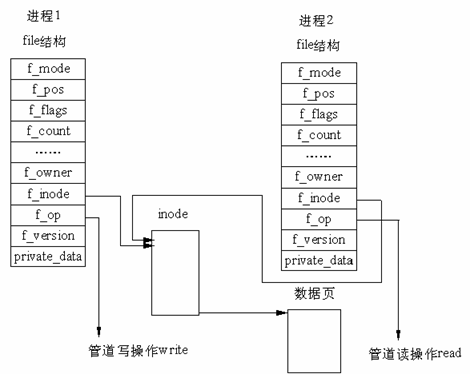

Shell¶
About¶
shell is the main scripting language of linux operating system. - there are so many dirtribution of shell
- Bourne Shell(sh)、Bourne again Shell(bash)、 C Shell(csh)、Korn Shell(ksh)
- by defalut, Ubuntu supports sh/bash and use bash as its main shell(evolve from sh/csh/ksh).
- configuration files
- before: /etc/profile –> ~/.bash_profile –> ~/.bashrc –> /etc/bashrc
- after: ~/.bash_logout
Utilization¶
Jobs¶
cmd & # running a job in background
jobs # list all jobs in background
kill %{num} # kill background job
bg %{num} # makes job running in background
fg %{num} # makes job running in foreground
nohup cmd & # make sure job running in backgound even colsed ssh session
kill¶
kill -l # list all available signals
kill -1 {signum/signame} # translate between signame and signum
kill -9 -1 # kill all processes you can kill
kill {pids} # send SIGTERM(15) to those processes
Variables¶
Enviroment variables¶
| name | descriptions |
|---|---|
| SHELL | the shell current using |
| LANGLC_ALL | language configurations |
| PATH | path to find executables |
| PS1 | command line prompt, see more (man bash , then /\\u) |
| LINENO | current line NO. |
| HISTSIZE | the number of history cmds will be preserved |
Parameter Expansion¶
expansion operators¶
- substitute operator
| operator | substitute |
|---|---|
| ${varname:-word} | if null, return word |
| ${varname:=word} | if null, set word to varname, then return word |
| ${varname:+word} | if not null, return word |
| ${varname:?message} | if null, print message then exit |
- pattern matching mode
positional parameter¶
| expression | descriptions |
|---|---|
| $num | num can be 1~9, $10 will be $1 and 0, ${10} is correct expression |
| $* | if cmd a b c d , then $*=”a” “b” “c” “d”, “$*” will be “a b c d” |
| $@ | $@=”a” “b” “c” “d”, “$@” still is “a” “b” “c” “d” |
| $# | number of positonal parameters |
special parameter¶
slicing¶
| operator | substitute |
|---|---|
| ${var#*regex} | keep right part of regex(search from left, first result) |
| ${var##*regex} | keep right part of regex(search from left, last result) |
| ${var%regex*} | keep left part of regex(search from right, first result) |
| ${var%%regex*} | keep left part of regex(search from right, last result) |
| ${var:3} | keep chars since 4th charactor |
| ${var:3:2} | keep 2 chars since 4th charactor |
| ${var:0-3} | keep last 3 chars |
| ${var:0-3:2} | keep 2 chars since 3rd charactor from bottom |
- * can be omitted if regex at front or end of string
Arithmetic Expansion¶
No need of escape charactor
| operator | description | sequence |
|---|---|---|
| ++ – | auto add/minus | LR |
| + - ! ~ | unary +/- , AND/OPPISITE | RL |
| Inputs | Output | |
|---|---|---|
| A | B | A or B |
| False | False | False A |
| True | False | True |
| False | True | True |
| True | True | True |
set¶
Set or unset values of shell options and positional parameters (help set)
| options | descriptions |
|---|---|
| -e, errexit | Exit immediately if a command exits with a non-zero status |
| -E, errtrace |
Inter Process Communication (IPC)¶
Pipe¶
In linux OS, there is no special data structure for this feature. Realizing it by creating 2 files link to a VFS index node, and this VFS node will link to a physical page. [1]
Named pipe(FIFO)¶
- named pipe (also known as a FIFO for its behavior) is an extension to the traditional pipe concept
- one of the methods of inter-process communication (IPC)
- A named pipe, however, can last as long as the system is up (appears as a file or a device)
- It can be deleted if no longer used
- create w/ mkfifo() or mknod()
$ mkfifo my_pipe
$ ll my_file
prw-r--r-- 1 JetChars staff 0 2 20 17:13 my_pipe
$ gzip -9 -c < my_pipe > out.gz &
[1] 8530
$ echo hello > my_pipe
[1]+ Done gzip -9 -c < my_pipe > out.gz
Signal¶
Shell at windows¶
xshell¶
cygwin¶
- run as admin will become a sudoer. cygwin have no sudo/su command.
cygrunsrv -h
cygrunsrv -S sshd # same as ``net start sshd``
config sshd¶
- before running sshd at windows, cygwin need run as admin for sshd configuration.
1 2 3 4 5 6 7 8 9 10 11 12 13 14 15 16 17 18 19 20 21 22 23 24 25 26 27 28 29 30 31 32 33 34 35 36 37 38 39 40 41 42 43 44 45 46 47 48 49 50 51 52 53 54 55 56 57 58 59 60 61 62 63 64 65 66 67 68 69 70 71 72 73 74 75 76 77 78 | $ ssh-host-config
*** Info: Generating missing SSH host keys
*** Query: Overwrite existing /etc/ssh_config file? (yes/no) yes
*** Info: Creating default /etc/ssh_config file
*** Query: Overwrite existing /etc/sshd_config file? (yes/no) yes
*** Info: Creating default /etc/sshd_config file
*** Info: StrictModes is set to 'yes' by default.
*** Info: This is the recommended setting, but it requires that the POSIX
*** Info: permissions of the user's home directory, the user's .ssh
*** Info: directory, and the user's ssh key files are tight so that
*** Info: only the user has write permissions.
*** Info: On the other hand, StrictModes don't work well with default
*** Info: Windows permissions of a home directory mounted with the
*** Info: 'noacl' option, and they don't work at all if the home
*** Info: directory is on a FAT or FAT32 partition.
*** Query: Should StrictModes be used? (yes/no) no
*** Info: Privilege separation is set to 'sandbox' by default since
*** Info: OpenSSH 6.1. This is unsupported by Cygwin and has to be set
*** Info: to 'yes' or 'no'.
*** Info: However, using privilege separation requires a non-privileged account
*** Info: called 'sshd'.
*** Info: For more info on privilege separation read /usr/share/doc/openssh/README.privsep.
*** Query: Should privilege separation be used? (yes/no) no
*** Info: Updating /etc/sshd_config file
*** Query: Do you want to install sshd as a service?
*** Query: (Say "no" if it is already installed as a service) (yes/no) yes
*** Query: Enter the value of CYGWIN for the daemon: [] binmode ntsec
*** Info: On Windows Server 2003, Windows Vista, and above, the
*** Info: SYSTEM account cannot setuid to other users -- a capability
*** Info: sshd requires. You need to have or to create a privileged
*** Info: account. This script will help you do so.
*** Info: It's not possible to use the LocalSystem account for services
*** Info: that can change the user id without an explicit password
*** Info: (such as passwordless logins [e.g. public key authentication]
*** Info: via sshd) when having to create the user token from scratch.
*** Info: For more information on this requirement, see
*** Info: https://cygwin.com/cygwin-ug-net/ntsec.html#ntsec-nopasswd1
*** Info: If you want to enable that functionality, it's required to create
*** Info: a new account with special privileges (unless such an account
*** Info: already exists). This account is then used to run these special
*** Info: servers.
*** Info: Note that creating a new user requires that the current account
*** Info: have Administrator privileges itself.
*** Info: No privileged account could be found.
*** Info: This script plans to use 'cyg_server'.
*** Info: 'cyg_server' will only be used by registered services.
*** Query: Do you want to use a different name? (yes/no) yes
*** Query: Enter the new user name: root
*** Query: Reenter: root
*** Query: Create new privileged user account 'WENJIECA-MOBL1\root' (Cygwin name: 'wenjieca-mobl1+root')? (yes/no) yes
*** Info: Please enter a password for new user wenjieca-mobl1+root. Please be sure
*** Info: that this password matches the password rules given on your system.
*** Info: Entering no password will exit the configuration.
*** Query: Please enter the password:
*** Query: Reenter:
*** Info: User 'wenjieca-mobl1+root' has been created with password 'Calebjay@12'.
*** Info: If you change the password, please remember also to change the
*** Info: password for the installed services which use (or will soon use)
*** Info: the 'wenjieca-mobl1+root' account.
*** Info: The sshd service has been installed under the 'wenjieca-mobl1+root'
*** Info: account. To start the service now, call `net start sshd' or
*** Info: `cygrunsrv -S sshd'. Otherwise, it will start automatically
*** Info: after the next reboot.
*** Info: Host configuration finished. Have fun!
|
| [1] | http://www.cnblogs.com/biyeymyhjob/archive/2012/11/03/2751593.html |